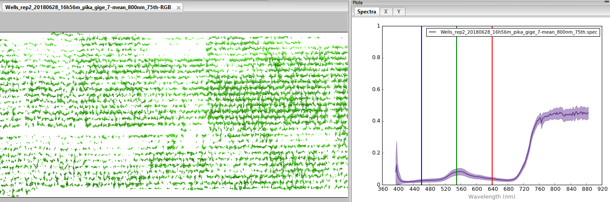

3. Tutorial: hstools¶
3.1. Sample data¶
Sample imagery captured from a Resonon Pika II VIS-NIR line scanning imager and ancillary sample files can be downloaded from this link.
Before trying this tutorial on your own machine, please download the sample files and place into a local directory of your choosing (and do not change the file names). Indicate the location of your sample files by modifying data_dir:
[1]:
data_dir = r'F:\\nigo0024\Documents\hs_process_demo'
3.2. Confirm your environment¶
Before trying the tutorials, be sure hs_process and its dependencies are properly installed. If you installed in a virtual environment, first check we are indeed using the Python instance that was installed with the virtual environment:
[2]:
import sys
print('Python install location: {0}'.format(sys.executable))
Python install location: C:\Users\nigo0024\AppData\Local\Continuum\anaconda3\envs\spec\python.exe
The spec folder that contains python.exe tells me that the activated Python instance is indeed in the spec environment, just as I intend. If you created a virtual environment, but your python.exe is not in the envs\spec directory, you either did not properly create your virtual environment or you are not pointing to the correct Python installation in your IDE (e.g., Spyder, Jupyter notebook, etc.).
3.3. hstools.clean_md_sets¶
Converts metadata items that are expressed as a list to be expressed as a dictionary. [API]
Load and initialize hsio
[3]:
import os
from hs_process import hsio
fname_in = os.path.join(data_dir, 'Wells_rep2_20180628_16h56m_pika_gige_7-Radiance Conversion-Georectify Airborne Datacube-Convert Radiance Cube to Reflectance from Measured Reference Spectrum.bip.hdr')
io = hsio(fname_in)
Create sample metadata with “wavelength” expressed as a list of strings
[4]:
metadata = {'samples': 1300,
'lines': 617,
'bands': 4,
'file type': 'ENVI Standard',
'wavelength': ['394.6', '396.6528', '398.7056',
'400.7584']}
Clean metadata using hstools.clean_md_sets. Notice how wavelength is now expressed as a str representation of a dict, which is required for properly writing the metadata to the .hdr file via save_image() in Spectral Python.
[5]:
io.tools.clean_md_sets(metadata=metadata)
[5]:
{'samples': 1300,
'lines': 617,
'bands': 4,
'file type': 'ENVI Standard',
'wavelength': '{394.6, 396.6528, 398.7056, 400.7584}'}
3.4. hstools.del_meta_item¶
Deletes metadata item from SpyFile object. [API]
Load and initialize hsio
[6]:
from hs_process import hsio
fname_in = os.path.join(data_dir, 'Wells_rep2_20180628_16h56m_pika_gige_7-Radiance Conversion-Georectify Airborne Datacube-Convert Radiance Cube to Reflectance from Measured Reference Spectrum.bip.hdr')
io = hsio(fname_in)
Create sample metadata
[7]:
metadata = {'samples': 1300,
'lines': 617,
'bands': 4,
'file type': 'ENVI Standard',
'map info': '{UTM, 1.0, 1.0, 421356.76707299997, 4844936.7317699995, 0.04, 0.04, 15, T, WGS-84, units meters, rotation 0.000}',
'wavelength': ['394.6', '396.6528', '398.7056', '400.7584']}
Delete “map info” from metadata using hstools.del_met_item
[8]:
io.tools.del_meta_item(metadata, 'map info')
[8]:
{'samples': 1300,
'lines': 617,
'bands': 4,
'file type': 'ENVI Standard',
'wavelength': ['394.6', '396.6528', '398.7056', '400.7584']}
3.5. hstools.get_band¶
Finds the band number of the closest target wavelength. [API]
Load and initialize hsio
[9]:
from hs_process import hsio
fname_in = os.path.join(data_dir, 'Wells_rep2_20180628_16h56m_pika_gige_7-Radiance Conversion-Georectify Airborne Datacube-Convert Radiance Cube to Reflectance from Measured Reference Spectrum.bip.hdr')
io = hsio(fname_in)
Use hstools.get_band to find the band number corresponding to 703 nm
[10]:
io.tools.get_band(703, io.spyfile)
[10]:
151
3.6. hstools.get_wavelength¶
Returns actual wavelength of the closest target band. [API]
Load and initialize hsio
[11]:
from hs_process import hsio
fname_in = os.path.join(data_dir, 'Wells_rep2_20180628_16h56m_pika_gige_7-Radiance Conversion-Georectify Airborne Datacube-Convert Radiance Cube to Reflectance from Measured Reference Spectrum.bip.hdr')
io = hsio(fname_in)
Use hstools.get_wavelength to find the wavelength value corresponding to the 151st band
[12]:
io.tools.get_wavelength(151, io.spyfile)
[12]:
702.52
3.7. hstools.get_center_wl¶
Gets band numbers and mean wavelength from all wavelengths (or bands) in wl_list. [API]
Load and initialize hsio
[13]:
from hs_process import hsio
fname_in = os.path.join(data_dir, 'Wells_rep2_20180628_16h56m_pika_gige_7-Radiance Conversion-Georectify Airborne Datacube-Convert Radiance Cube to Reflectance from Measured Reference Spectrum.bip.hdr')
io = hsio(fname_in)
Using hstools.get_center_wl, find the bands and actual mean wavelength of the bands closest to 700 and 710 nm.
[14]:
bands, wls_mean = io.tools.get_center_wl([700, 710], wls=True)
print('Bands: {0}'.format(bands))
print('Center wavelength: {0}'.format(wls_mean))
Bands: [150, 155]
Center wavelength: 705.5992
3.8. hstools.get_band_index¶
Subtracts 1 from band_num and returns the band index(es). [API]
Load and initialize hsio
[15]:
from hs_process import hsio # load hsio
fname_in = os.path.join(data_dir, 'Wells_rep2_20180628_16h56m_pika_gige_7-Radiance Conversion-Georectify Airborne Datacube-Convert Radiance Cube to Reflectance from Measured Reference Spectrum.bip.hdr')
io = hsio(fname_in)
Using hstools.get_band_index, find the band index of the 4th, 43rd, and 111th bands
[16]:
io.tools.get_band_index([4, 43, 111])
[16]:
[3, 42, 110]
3.9. hstools.get_spectral_mean¶
Gets the spectral mean of a datacube from a list of bands. [API]
Load and initialize hsio
[17]:
from hs_process import hsio # load hsio
fname_in = os.path.join(data_dir, 'Wells_rep2_20180628_16h56m_pika_gige_7-Radiance Conversion-Georectify Airborne Datacube-Convert Radiance Cube to Reflectance from Measured Reference Spectrum.bip.hdr')
io = hsio(fname_in)
Calculate the spectral mean of the datacube via hstools.get_spectral_mean using all bands between 800 and 840 nm
[18]:
band_list = io.tools.get_band_range([800, 840], index=False)
array_mean = io.tools.get_spectral_mean(band_list, spyfile=io.spyfile)
print('Band list: {0}'.format(band_list))
io.show_img(array_mean)
Band list: [199, 200, 201, 202, 203, 204, 205, 206, 207, 208, 209, 210, 211, 212, 213, 214, 215, 216, 217]
3.10. hstools.get_band_num¶
Adds 1 to band_idx and returns the band number(s). [API]
Load and initialize hsio
[19]:
from hs_process import hsio
fname_in = os.path.join(data_dir, 'Wells_rep2_20180628_16h56m_pika_gige_7-Radiance Conversion-Georectify Airborne Datacube-Convert Radiance Cube to Reflectance from Measured Reference Spectrum.bip.hdr')
io = hsio(fname_in)
Using hstools.get_band_num, find the band number located at the 4th, 43rd, and 111th index values.
[20]:
io.tools.get_band_num([4, 43, 111])
[20]:
[5, 44, 112]
3.11. hstools.get_band_range¶
Retrieves the band index or band number for all bands within a wavelength range. [API]
Load and initialize hsio
[21]:
from hs_process import hsio
fname_in = os.path.join(data_dir, 'Wells_rep2_20180628_16h56m_pika_gige_7-Radiance Conversion-Georectify Airborne Datacube-Convert Radiance Cube to Reflectance from Measured Reference Spectrum.bip.hdr')
io = hsio(fname_in)
Find the band number of all bands between 700 and 710 nm
[22]:
io.tools.get_band_range([700, 710], index=False, spyfile=io.spyfile)
[22]:
[150, 151, 152, 153, 154]
Find the band index values of all bands between 700 and 710 nm via hstools.get_band_range
[23]:
io.tools.get_band_range([700, 710], index=True, spyfile=io.spyfile)
[23]:
[149, 150, 151, 152, 153]
3.12. hstools.get_meta_set¶
Reads metadata “set” (i.e., string representation of a Python set; common in .hdr files), taking care to remove leading and trailing spaces. [API]
Load and initialize hsio
[24]:
from hs_process import hsio
fname_in = os.path.join(data_dir, 'Wells_rep2_20180628_16h56m_pika_gige_7-Radiance Conversion-Georectify Airborne Datacube-Convert Radiance Cube to Reflectance from Measured Reference Spectrum.bip.hdr')
io = hsio(fname_in)
Retrieve the “map info” set from the metadata via hstools.get_meta_set
[25]:
io.spyfile.metadata['map info']
[25]:
['UTM',
'1.0',
'1.0',
'441357.287073',
'4855944.7717699995',
'0.04',
'0.04',
'15',
'T',
'WGS-84',
'units meters',
'rotation 0.000']
3.13. hstools.get_UTM¶
Calculates the new UTM coordinate of cropped plot to modify the “map info” tag of the .hdr file. [API]
Load and initialize hsio
[26]:
from hs_process import hsio
fname_in = os.path.join(data_dir, 'Wells_rep2_20180628_16h56m_pika_gige_7-Radiance Conversion-Georectify Airborne Datacube-Convert Radiance Cube to Reflectance from Measured Reference Spectrum.bip.hdr')
io = hsio(fname_in)
Retrieve UTM coordinates and pixel sizes from the metadata
[27]:
map_info_set = io.spyfile.metadata['map info']
utm_x = io.tools.get_meta_set(map_info_set, 3)
utm_y = io.tools.get_meta_set(map_info_set, 4)
spy_ps_e = float(map_info_set[5])
spy_ps_n = float(map_info_set[6])
Calculate the UTM coordinates at the 100th easting pixel and 50th northing pixel using hstools.get_UTM
[28]:
ul_x_utm, ul_y_utm = io.tools.get_UTM(100, 50, utm_x, utm_y, spy_ps_e, spy_ps_n)
print('100th easting pixel/50th northing pixel x: {0}'.format(ul_x_utm))
print('100th easting pixel/50th northing pixel y: {0}'.format(ul_y_utm))
100th easting pixel/50th northing pixel x: 441361.32707299996
100th easting pixel/50th northing pixel y: 4855942.7317699995
3.14. hstools.load_spyfile¶
Loads a SpyFile (Spectral Python object) for data access and/or manipulation by the hstools class. [API]
Load and initialize hsio
[29]:
from hs_process import hsio
fname_in = os.path.join(data_dir, 'Wells_rep2_20180628_16h56m_pika_gige_7-Radiance Conversion-Georectify Airborne Datacube-Convert Radiance Cube to Reflectance from Measured Reference Spectrum.bip.hdr')
io = hsio(fname_in)
Load a new datacube using hstools.load_spyfile
[30]:
io.tools.load_spyfile(io.spyfile)
io.tools.spyfile
[30]:
Data Source: 'F:\\nigo0024\Documents\hs_process_demo\Wells_rep2_20180628_16h56m_pika_gige_7-Radiance Conversion-Georectify Airborne Datacube-Convert Radiance Cube to Reflectance from Measured Reference Spectrum.bip'
# Rows: 617
# Samples: 1300
# Bands: 240
Interleave: BIP
Quantization: 32 bits
Data format: float32
3.15. hstools.mask_array¶
Creates a masked numpy array based on a threshold value. If array is already a masked array, that mask is maintained and the new mask(s) is/are added to the original mask. [API]
Load and initialize hsio
[31]:
from hs_process import hsio
fname_in = os.path.join(data_dir, 'Wells_rep2_20180628_16h56m_pika_gige_7-Radiance Conversion-Georectify Airborne Datacube-Convert Radiance Cube to Reflectance from Measured Reference Spectrum.bip.hdr')
io = hsio(fname_in)
Retrieve the image band at 800 nm using hstools.get_band and hsio.spyfile.open_memmap
[32]:
band = io.tools.get_band(800)
array = io.spyfile.open_memmap()[:, :, band]
Create a masked array of all values below the 75th percentile via hstools.mask_array
[33]:
array_mask, metadata = io.tools.mask_array(array, io.spyfile.metadata, percentile=75, side='lower')
See that the “history” tage in the metadata has been modified
[34]:
metadata['history'][-158:]
[34]:
"hs_process.mask_array[<label: 'thresh?' value:None; label: 'percentile?' value:75; label: 'side?' value:lower; label: 'unmasked_pct?' value:24.9935170178282>]"
Visualize the unmasked array using hsio.show_img. Set vmin and vmax to ensure the same color scale is used in comparing the masked vs. unmasked arrays.
[35]:
vmin = array.min()
vmax = array.max()
io.show_img(array, vmin=vmin, vmax=vmax)
Visualize the unmasked array using hsio.show_img
[36]:
io.show_img(array_mask, vmin=vmin, vmax=vmax)
3.16. hstools.mean_datacube¶
Calculates the mean spectra for a datcube; if mask is passed (as a numpy.ndarray), then the mask is applied to spyfile prior to computing the mean spectra. [API]
Load and initialize hsio
[37]:
from hs_process import hsio
fname_in = os.path.join(data_dir, 'Wells_rep2_20180628_16h56m_pika_gige_7-Radiance Conversion-Georectify Airborne Datacube-Convert Radiance Cube to Reflectance from Measured Reference Spectrum.bip.hdr')
io = hsio(fname_in)
Retrieve the image band at 800 nm using hstools.get_band and hsio.spyfile.open_memmap, then mask out all pixels whose value falls below the 75th percentile.
[38]:
band = io.tools.get_band(800)
array = io.spyfile.open_memmap()[:, :, band]
array_mask, metadata = io.tools.mask_array(array, io.spyfile.metadata, percentile=75, side='lower')
Calculate the spectral mean from the remaining (i.e., unmasked) pixels using hstools.mean_datacube.
[39]:
spec_mean, spec_std, datacube_masked = io.tools.mean_datacube(io.spyfile, mask=array_mask)
Save using hsio.write_spec and hsio.write_cube, then load into Spectronon software for visualization.
[40]:
fname_hdr_spec = os.path.join(data_dir, 'hstools', 'Wells_rep2_20180628_16h56m_pika_gige_7-mean_800nm_75th.spec.hdr')
fname_hdr_cube = os.path.join(data_dir, 'hstools', 'Wells_rep2_20180628_16h56m_pika_gige_7-mean_800nm_75th.bip.hdr')
if not os.path.isdir(os.path.dirname(fname_hdr_spec)): # create a new folder named "hstools" if it does not exist
os.mkdir(os.path.dirname(fname_hdr_spec))
io.write_spec(fname_hdr_spec, spec_mean, spec_std, metadata=metadata)
io.write_cube(fname_hdr_cube, datacube_masked, metadata=metadata)
Saving F:\nigo0024\Documents\hs_process_demo\hstools\Wells_rep2_20180628_16h56m_pika_gige_7-mean_800nm_75th.spec
Saving F:\nigo0024\Documents\hs_process_demo\hstools\Wells_rep2_20180628_16h56m_pika_gige_7-mean_800nm_75th.bip
Load the mean datacube and spectra into Spectronon for visualization: 
3.17. hstools.modify_meta_set¶
Modifies metadata “set” (i.e., string representation of a Python set; common in .hdr files) by converting string to list, then adjusts the value of an item by its index. [API]
Load and initialize hsio
[41]:
from hs_process import hsio
fname_in = os.path.join(data_dir, 'Wells_rep2_20180628_16h56m_pika_gige_7-Radiance Conversion-Georectify Airborne Datacube-Convert Radiance Cube to Reflectance from Measured Reference Spectrum.bip.hdr')
io = hsio(fname_in)
Retrieve the “map info” set from the metadata via hstools.get_meta_set
[42]:
map_info_set = io.spyfile.metadata['map info']
map_info_set
[42]:
['UTM',
'1.0',
'1.0',
'441357.287073',
'4855944.7717699995',
'0.04',
'0.04',
'15',
'T',
'WGS-84',
'units meters',
'rotation 0.000']
Modify the value at index position 4 from 4855944.7717699995 to 441300.2 using hstools.modify_meta_set.
[43]:
io.tools.modify_meta_set(map_info_set, idx=4, value=441300.2)
[43]:
'{UTM, 1.0, 1.0, 441357.287073, 441300.2, 0.04, 0.04, 15, T, WGS-84, units meters, rotation 0.000}'
3.18. hstools.plot_histogram¶
Plots a histogram with the percentile value labeled. [API]
Load and initialize hsio
[44]:
from hs_process import hsio
fname_in = os.path.join(data_dir, 'Wells_rep2_20180628_16h56m_pika_gige_7-Radiance Conversion-Georectify Airborne Datacube-Convert Radiance Cube to Reflectance from Measured Reference Spectrum.bip.hdr')
io = hsio(fname_in)
Retrieve the image band at 800 nm using hstools.get_band and hsio.spyfile.open_memmap
[45]:
band = io.tools.get_band(800)
array = io.spyfile.open_memmap()[:, :, band]
Create a masked array of all values below the 5th percentile via hstools.mask_array
[46]:
array_mask, metadata = io.tools.mask_array(array, io.spyfile.metadata, percentile=5, side='lower')
Visualize the histogram of the unmasked pixels (i.e., those greater than the 5th percentile) using hstools.plot_histogram
[47]:
title = 'Reflectance at 800 nm'
xlabel = 'Reflectance (%)'
fig = io.tools.plot_histogram(array_mask, title=title, xlabel=xlabel)